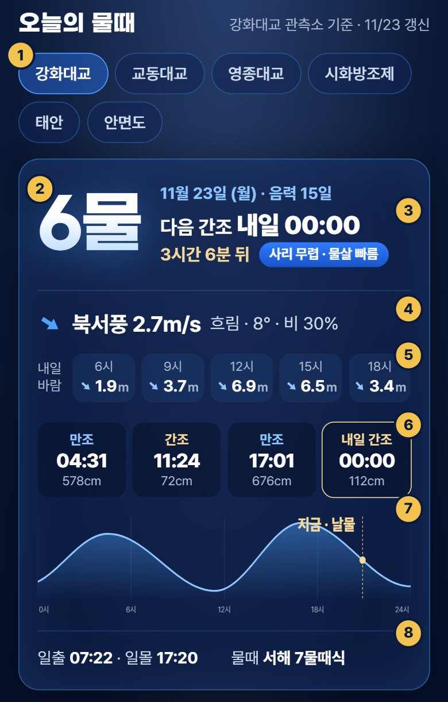

① 관측소 탭
보고 싶은 바다를 고르는 곳이에요. 누르면 물때와 바람이 모두 그 동네 것으로 바뀌고, 마지막에 고른 탭은 다음에 열 때도 그대로 남아 있어요.
제목 오른쪽 작은 글씨가 어느 관측소 기준인지와 언제 받은 자료인지를 알려 줘요. 이름과 실제 관측소가 다른 곳도 있어서 한 번 봐 두면 좋아요.
- 시화방조제 — 방조제 앞엔 관측소가 없어 가장 가까운 인천송도 기준
- 태안 — 안흥(신진도) 기준
- 안면도 — 보령 기준
② 오늘 몇 물인지
큰 글씨는 오늘 물때예요. 서해에서 많이 쓰는 7물때식으로, 음력 날짜에 따라 1물부터 13물, 조금, 무시까지 돌아요. 바로 옆에 오늘 날짜와 음력 날짜가 같이 나와요.
물살이 유난한 날엔 파란 알림이 붙어요.
- 사리 무렵 · 물살 빠름 — 6물·7물·8물. 물이 많이 들고 많이 빠지는 때
- 조금 무렵 · 물살 약함 — 조금·무시. 물 높이 차이가 작은 때
휴대폰이 작으면 알림 글씨가 「물살 빠름」처럼 짧게 줄어들 수 있어요.
③ 다음 물때까지 남은 시간
지금부터 가장 가까운 만조나 간조가 몇 시인지, 그리고 몇 시간 몇 분 남았는지 보여 줘요. 자정을 넘기면 '내일'이 붙어요. 출발 시간 잡을 때 이 줄만 봐도 돼요.
④ 지금 바람과 날씨
풍향·풍속, 하늘, 기온, 비 올 확률을 한 줄로 모았어요.
- 북서풍은 북서쪽에서 불어오는 바람이에요. 앞의 화살표는 바람이 불어 가는 쪽을 가리켜요.
- 풍속은 초속(m/s)이에요. 홈페이지에서는 7m/s 이상을 '센 바람'으로 보고 따로 표시해요(⑤).
- 태안·안면도 탭은 민물 쪽에서 보기 좋게 태안읍·안면읍 내륙 예보예요. 줄 오른쪽 끝에 '내륙 바람'이라고 작게 적혀 있어요. 바닷가는 이보다 센 날이 많아요.
⑤ 시간대별 바람
오전 6시부터 저녁 6시까지 3시간 간격 다섯 칸이에요. 저녁 6시가 지나면 왼쪽에 '내일 바람'이 뜨고 다음 날 칸으로 바뀌어요. 밤에 보고 다음 날 아침 출조를 정하기 좋아요.
초속 7m 이상인 칸은 금색이에요. 금색 칸이 몰린 시간은 피하는 게 편해요.
⑥ 만조·간조 시간
오늘 물이 가장 높은 때(만조)와 가장 낮은 때(간조)예요. 칸마다 시각과 그때 물 높이(cm)가 적혀 있어요.
- 금색 테두리 칸이 다음에 올 물때예요. ③과 같은 칸이에요.
- 하루에 보통 만조·간조가 두 번씩 오지만, 세 번만 오는 날엔 4번째 칸에 내일 첫 물때를 흐리게 붙여 둬요.
- cm는 그 바다에서 물이 가장 낮을 때쯤을 0으로 잡고 잰 높이예요. 만조와 간조 숫자 차이가 클수록 물이 많이 움직이는 날이에요.
⑦ 물 높이 곡선
0시부터 24시까지 물 높이가 어떻게 오르내리는지 그린 그림이에요. 노란 점이 지금이고, 위에 들물(물이 차오르는 중)인지 날물(빠지는 중)인지 적혀 있어요.
곡선은 예보된 만조·간조 사이를 부드럽게 이은 모양이라, 실제 물 높이와 조금 다를 수 있어요.
⑧ 일출·일몰
그 관측소 근처 해 뜨고 지는 시각이에요. 새벽·저녁 낚시 계획 잡을 때 같이 보면 돼요.
자료는 어디서 오나요
- 물때 — 국립해양조사원 조석예보를 매일 새벽 자동으로 받아요.
- 바람·날씨 — 기상청 단기예보를 3시간마다 받아요. 오래된 자료(14시간 넘게 지난 것)는 헷갈리지 않게 아예 숨겨요.